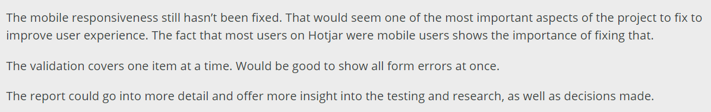
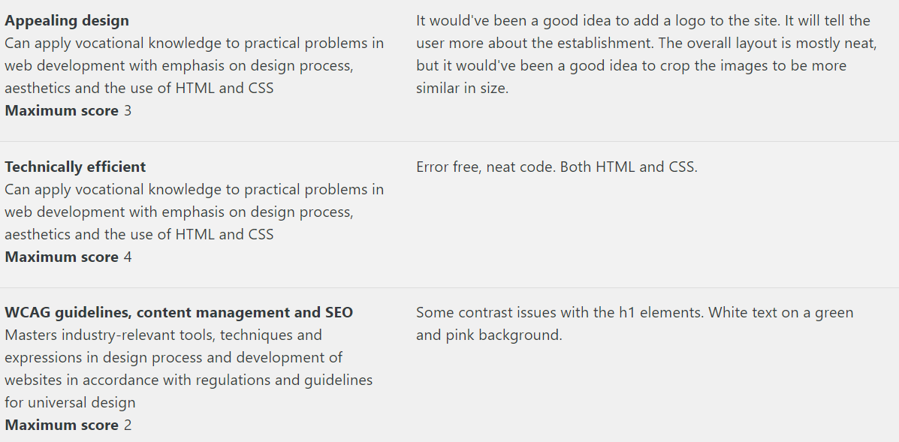
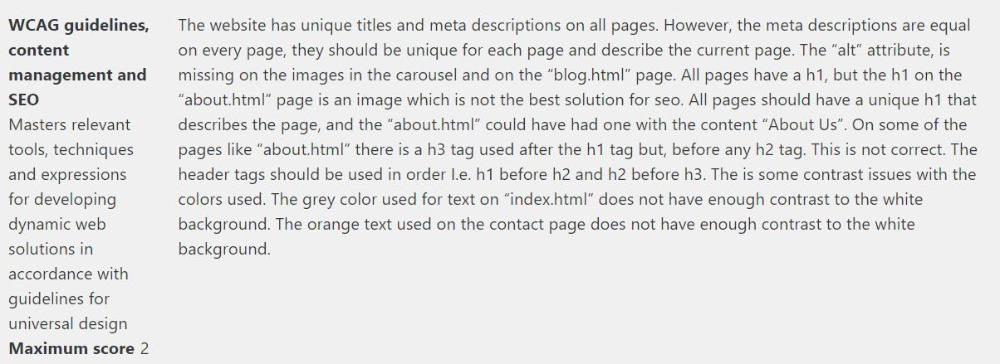

Cross-course project
View the project View on Github The most time i spend for this project is the mobile responsive. had to redesign/redo some of the websites structures and coding. still not finish with it. since i got little time. wanted to api call item id to the bag page but didnt get time.
I fix the contact page as the feedback say aswell as the meta tag description, corp some of the images it was way to big taking up the whole screen.
spends sometime on a new element 'table' was ging to use it on yourbag page but didnt quit go as plan.
i removed the favorite page. I saw that many websites you can just add an item to bag/cart anyway.. also remove the search bar. i did remove a sec nav menu to for sale, and different types of jacket. was a big mass
when i first start to code on this project again it was a big mas that i just use margin and padding to push element in place... not flexbox or anything. all i saw was my screen not the other. big big mass to fix.
Semester Project 1
View the project View on Github for the semester project i been working on the feedback i got. Made a logo and update both in desktop and mobile responsive
I update the h1 background to be more green and pink color to give more contrast.
Project Exam 1
View the project View on Github For the exam project i been making changes from the feedback i got within WCAG guildlines
Meta tag description has been updated, and all h1,h2,h3 in all pages. The grey text color on the index page has turn up to be more back. And the orange text on the contact page, aswell as added h1 to about us as suggested.
Nav opacity from 0.9 to 1, error feedback text from black to red in contact page to show it is an Error
The fortfolio
I misunderstood that you have to make changes to ALL 3 of the project.. spend most of the time on Cross-course project since it needed a big update. found it out at the last hours on the deliver page that i get points by ea changes of the 3 project.
so i had to make some quick changes to the other 2 project. hope it enough.
Got feedback about some element that needed to have max-width. look like it strech too much on a bigger screen. i have no idea and havent think about it at all. i forgot that that you could zoom out on the developer tools to look at bigger screen. Might have been using % on some div or container.